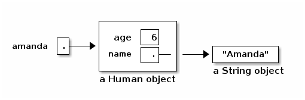
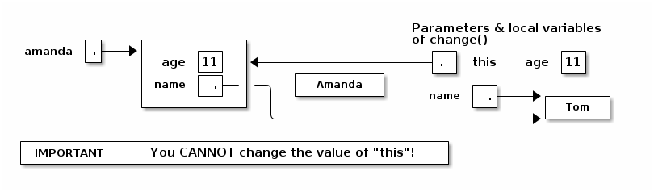

notes3
Table of Contents
Lecture 3
Today's reading: Sierra & Bates, pp. 71-74, 76, 85, 240-249, 273-281, 308-309.
DEFINING CLASSES
An object is a repository of data. Fields are variables that hold the data stored in objects. Fields in objects are also known as instance variables. In Java, fields are addressed much like methods are, but fields never have parameters, and no parentheses appear after them. For example, suppose that amanda is a Human object. Then amanda.introduce() is a method call, and amanda.age is a field. Let's write a class definition for the Human class.
class Human {
public int age; // The Human's age (an integer).
public String name; // The Human's name.
public void introduce() { // This is a _method definition_.
System.out.println("I'm " + name + " and I'm " + age + " years old.");
}
}
"age" and "name" are both fields of a Human object. Now that we've defined the Human class, we can construct as many Human objects as we want. Each Human object we create can have different values of age and name. We might create amanda by executing the following code.
Human amanda = new Human(); // Create amanda. amanda.age = 6; // Set amanda's fields. amanda.name = "Amanda"; amanda.introduce(); // _Method call_ has amanda introduce herself.

The output is: I'm Amanda and I'm 6 years old.
Why is it that, inside the definition of introduce(), we don't have to write "amanda.name" and "amanda.age"? When we invoke "amanda.introduce()", Java remembers that we are calling introduce() on the object that "amanda" references. The methods defined inside the Human class remember that we're referring to amanda's name and age. If we had written "rishi.introduce()", the introduce method would print rishi's name and age instead. If we want to mix two or more objects, we can.
class Human {
// Include all the stuff from the previous definition of Human here.
public void copy(Human original) {
age = original.age;
name = original.name;
}
}
Now, "amanda.copy(rishi)" copies rishi's fields to amanda.
Constructors
Let's write a constructor, a method that constructs a Human. The constructor won't actually contain code that does the creating; rather, Java provides a brand new object for us right at the beginning of the constructor, and all you have to write (if you want) in the constructor is code to initialize the new object.
class Human {
// Include all the stuff from the previous definitions here.
public Human(String givenName) {
age = 6;
name = givenName;
}
}
Notice that the constructor is named "Human", and it returns an object of type "Human". This constructor is called whenever we write "new Human(s)", where s is a String reference. Now, we can shorten amanda's coming-out party to
Human amanda = new Human("Amanda");
amanda.introduce();
These lines accomplish precisely the same result as amanda's previous four lines.
You might ask…why were we able to create a Human object before we wrote a constructor? Java provides every class with a default constructor, which takes no parameters and does no initializing. Hence, when we wrote
Human amanda = new Human();
we created a new, blank Human. If the default constructor were explicitly written, it would look like this:
public Human() {
}
Warning: if you write your own Human constructor, even if it takes parameters, the default constructor goes away. If you want to have the default constructor and another constructor, you must define both explicitly.
You can override the default constructor by explicitly writing your own constructor with no parameters.
class Human {
// Include all the stuff from the previous definitions here.
public Human() {
age = 0;
name = "Untitled";
}
}
The "this" Keyword
A method invocation, like "amanda.introduce()", implicitly passes an object (in this example, amanda) as a parameter called "this". So we can rewrite our last constructor as follows without changing its meaning.
public Human() {
this.age = 0;
this.name = "Untitled";
}
In this case, "this" is optional. However, if the parameters or local variables of a method have the same name as the fields of an object, then the former have priority, and the "this" keyword is needed to refer to the object's fields.
public void change(int age) {
String name = "Tom";
this.age = age;
this.name = name;
}
When we call "amanda.change(11)", "this" is assigned the same value as "amanda" before the change() method begins execution.

Now, when Java executes "this.age = age", it overwrites the 6 with an 11. When Java executes "this.name = name", it overwrites amanda's name as below.

A statement like "this = amanda;" will trigger a compile-time error.
The "static" Keyword
A static field is a single variable shared by a whole class of objects; its value does not vary from object to object. For example, if "numberOfHumans" is the number of Human objects that have been constructed, it is not appropriate for each object to have its own copy of this number; every time a new Human is created, we would have to update every Human.
If we declare a field "static", there is just one field for the whole class. Static fields are also called class variables.
class Human {
public static int numberOfHumans;
public int age;
public String name;
public Human() {
numberOfHumans++; // The constructor increments the number by one.
}
}
If we want to look at the variable numberOfHumans from another class, we write it in the usual notation, but we prefix it with the class name rather than the name of a specific object.
int kids = Human.numberOfHumans / 4; // Good.
int kids = amanda.numberOfHumans / 4; // This works too, but has nothing to
// do with amanda specifically. Don't
// do this; it's bad (confusing) style.
System.in and System.out are other examples of static fields.
Methods can be static too. A static method doesn't implicitly pass an object as a parameter.
class Human {
...
public static void printHumans() {
System.out.println(numberOfHumans);
}
}
Now, we can call "Human.printHumans()" from another class. We can also call "amanda.printHumans()", and it works, but it's bad style, and amanda will NOT be passed along as "this".
The main() method is always static, because when we run a program, we are not passing an object in.
Any attempt to reference "this" will cause a compile-time error.
Lifetimes of Variables
- A local variable (declared in a method) is gone forever as soon as the method in which it's declared finishes executing. (If it references an object, the object might continue to exist, though.)
- An instance variable (non-static field) lasts as long as the object exists. An object lasts as long as there's a reference to it.
- A class variable (static field) lasts as long as the program runs.